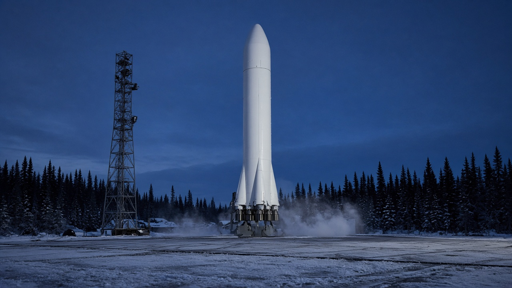
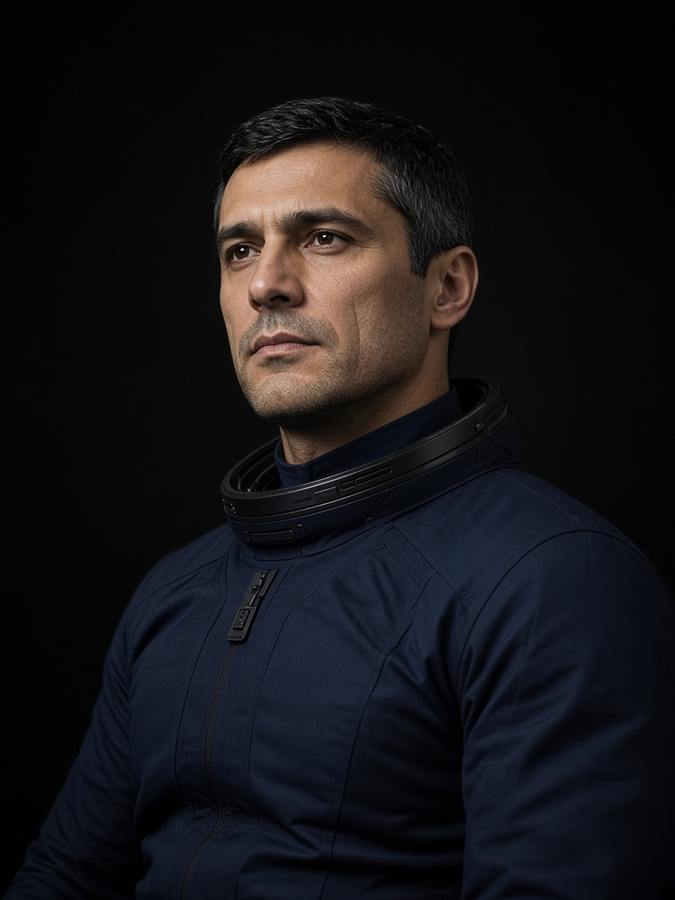
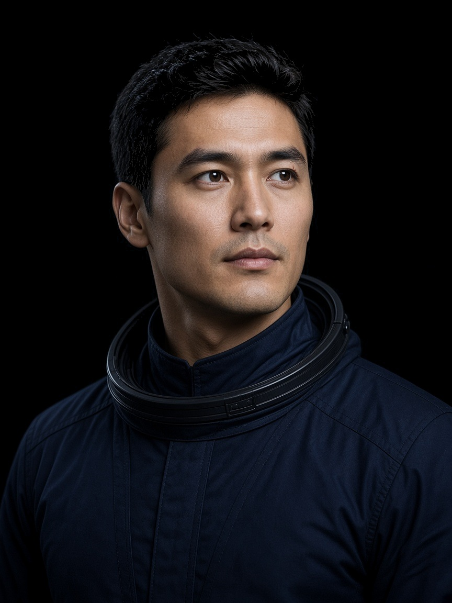
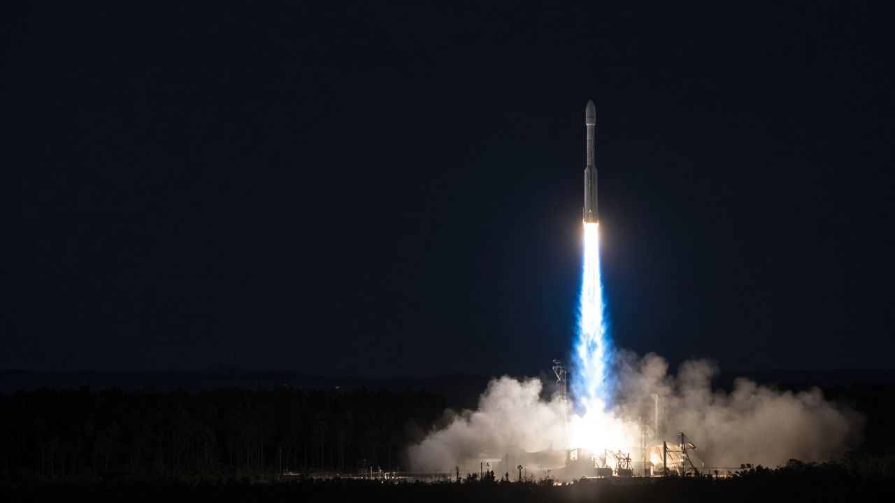
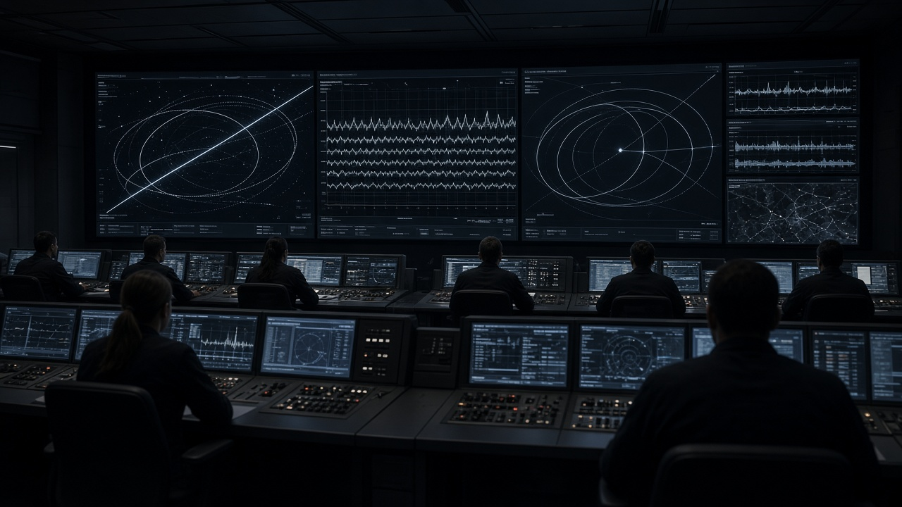
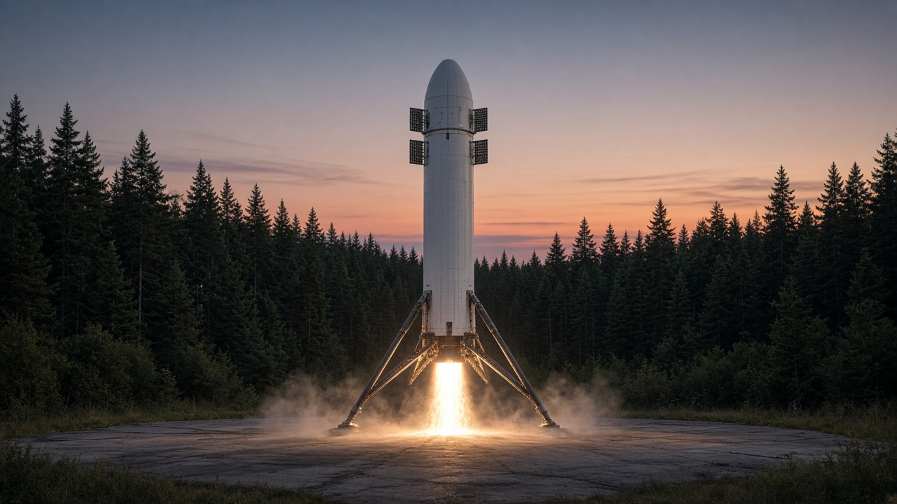
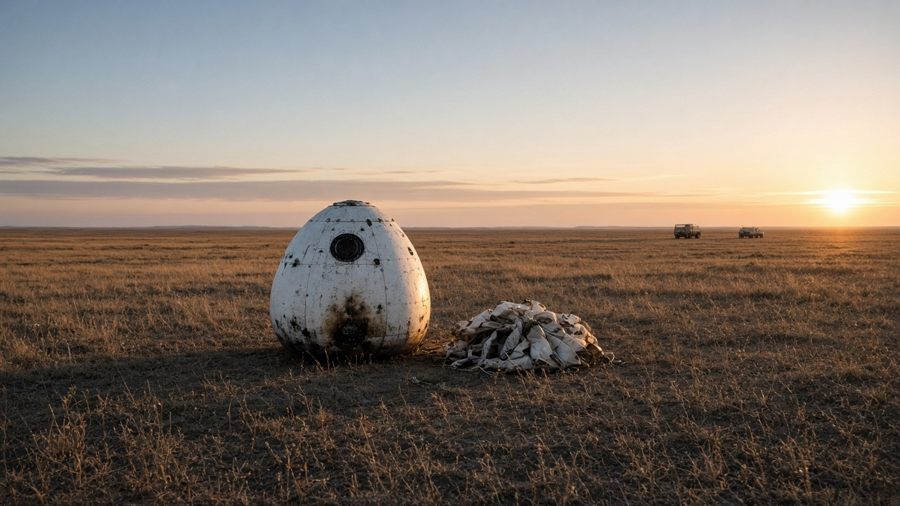

Миссия «Север-1» · LC-1 Восточный
1 ноября09:17
EBAL S1 поднимает корабль «Иртыш». На борту Рахал и Рахал. Первая ступень B1041 возвращается на LZ-1.
Ход кампании
-
Вывоз на LC-1 выполнено
-
Допуск экипажа выполнено
-
Заправка, экипаж в корабле впереди
-
Пуск EBAL S1 впереди
-
Посадка «Иртыша», П-4 впереди
Сутки пуска
1 ноября, омское время. Всё, что происходит от выхода из профилактория до орбиты. Если клапан окислителя E9 №4 не подтвердит допуск на заправке 30 октября, эта циклограмма сдвигается на сутки целиком.
-
Выезд
Рахал Ильяс и Рахал Тимур выходят из профилактория. Дорога до скафандрного зала — 11 минут. Медицина снимает давление и температуру ещё раз: допуск ВЛК от 28 октября действует, но утренний лист подписывают заново.
-
Скафандры
Герметичность каждого костюма проверяют дважды. Иртыш-1 докладывает готовность первым. Подголовник Тимура, который мерили 29 октября, стоит лётный: если бы не сел, его меняли бы в ночь на 30-е, до заправки.
-
Люк
Посадка в «Иртыш». Левое кресло — командир, правое — пилот. Люк закрывают в 07:28. Башню освобождают к 07:40. С этого момента экипаж говорит с Королём, омский зал только слушает.
-
Метан и кислород
Сначала первая ступень, затем вторая. Набор до полётного уровня занимает около пятидесяти минут. В 09:02 корабль переходит на бортовое питание. Окно открывается в 09:17 и держится четырнадцать минут, до 09:31.
-
Контакт подъёма
Девять «Кернов». Максимальный скоростной напор на 68-й секунде. Разделение в 02:31. «Иртыш» выходит из обтекателя в 03:40. Орбита 200 на 320 километров — расчёт на 08:06. Ступень B1041 садится на LZ-1 ещё через сорок шесть секунд. Если ветер на площадке выше 12 м/с, ступень уводят в расход, корабль всё равно пускают.

Иртыш-1 · набор 2022
Рахал
Ильяс Каримович · командир

Иртыш-2 · набор 2023
Рахал
Тимур Наилевич · пилот

1 ноября · профиль «Север-1»
Пуск
Кадр — архив «Север-0», 12 марта. Трасса та же. В ноябре на верхушке уже корабль с людьми, не массовый макет.
Ветер у земли по прогнозу на окно — 4 м/с, порывы до 7. Облачность 3 балла. Ограничений нет, решение за час до заправки.
| T+ | Событие |
|---|---|
| 00:00 | Контакт подъёма |
| 01:08 | Максимальный скоростной напор |
| 02:31 | Выключение девятки, разделение |
| 02:38 | Запуск E9V второй ступени |
| 03:40 | Сброс створок обтекателя |
| 08:06 | Орбита 200 × 320 км |
| 08:52 | Посадка B1041 на LZ-1 |

30 октября · 18:40
Заправка
Генеральная репетиция. Баки первой ступени до полётного уровня, экипаж в ложементах до отбоя на T−30 секунд. После слива — осмотр клапана окислителя E9 №4, его меняли на сухом прогоне 27 октября.
Запись в хронике
Носитель · ступень B1041
EBAL S1
Метан и жидкий кислород. Девять «Кернов» у земли, один в вакууме. Ступень садится в 2,8 км от старта.
- 68,6 мвысота в сборе
- 9 × E9860 кН каждый
- 12,8 тна НОО с возвратом
- 538 тстартовая масса

4 ноября · район П-4
Посадка
«Иртыш» садится южнее Орска. Парашют и двигатели мягкой посадки за секунду до грунта — так же, как беспилотная «Смена» в марте. На фото та мартовская посадка.
Состав
На столе LC-1 стоит не макет. Ниже то, что реально уедет 1 ноября, и то, что останется на земле.
-
«Иртыш», борт 01
Два кресла из четырёх. Масса с экипажем и грузом 9,6 т. Стыковочного узла нет: «Север-1» — свободный полёт на 44 витка, 2 суток 18 часов. Посадка 4 ноября в 06:40, район П-4 южнее Орска.
-
B1041
Первый лётный борт после B1037, которая села на «Север-0». Девять E9, центральный сажает ступень. Статическое огневое 20 октября: 7,0 секунд, 101,4% номинала. Клапан окислителя №4 заменён 27 октября.
-
Створки не возвращаем
4,0 на 11,2 метра. Сброс на 03:40. Ловить нечем, в зачёт миссии створки не входят. Под ними «Смена», не массовый макет марта.
-
Двое, дублёров нет
Иртыш-1 ведёт выведение и посадку. Иртыш-2 — жизнеобеспечение, связь «Волна» и четырнадцать экспериментов. Если кто-то снимается до 30 октября, пуск уходит в беспилотный резерв. Замены на скамейке нет.
-
Королёв командует
Четырнадцать пультов, две смены. Третья сидит в Омске и повторяет телеметрию, команды на борт оттуда не идут. Поисковая группа на П-4 выезжает 3 ноября вечером, чтобы встретить рассвет 4-го уже на точке.
-
Окно пока чистое
Прогноз на 09:17: ветер у земли 4 м/с, порывы до 7, облачность 3 балла. Решение по заправке — за час до неё. Брифинг 31 октября в 19:00: баллистики, посадка, командир.